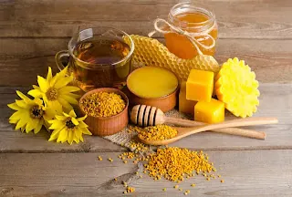

Sport & mouvement · 3 min de lecture
Les produits de la ruche
Les produits de la ruche

I. Introduction
A. Définition des produits de la ruche
- Substances naturelles produites par les abeilles
- Incluent le miel, la gelée royale, la propolis et le pollen
B. Histoire et importance culturelle
- Utilisés depuis l'Antiquité pour leurs propriétés nutritionnelles et médicinales
- Présents dans de nombreuses traditions médicinales à travers le monde
II. Le Miel
A. Composition
- Principalement composé de fructose et de glucose
- Contient des enzymes, des acides aminés, des vitamines (B, C) et des minéraux
B. Propriétés et bienfaits
- Antibactérien et antioxydant naturel
- Aide à la cicatrisation des plaies
- Soulage les maux de gorge et la toux
C. Utilisations
- Édulcorant naturel dans l'alimentation
- En cosmétique pour ses propriétés hydratantes
- En médecine traditionnelle pour divers maux
III. La Gelée Royale
A. Composition
- Riche en protéines, lipides, glucides
- Contient des vitamines (B, E), des minéraux et des acides gras uniques
B. Propriétés et bienfaits
- Stimule le système immunitaire
- Potentiel anti-fatigue et anti-âge
- Peut améliorer la fertilité et l'équilibre hormonal
C. Utilisations
- Complément alimentaire sous forme de capsules ou fraîche
- Dans les produits cosmétiques anti-âge
- En médecine traditionnelle pour la vitalité
IV. La Propolis
A. Composition
- Résine collectée par les abeilles sur les bourgeons d'arbres
- Riche en flavonoïdes, acides phénoliques et terpènes
B. Propriétés et bienfaits
- Puissant antibactérien, antiviral et antifongique
- Stimule le système immunitaire
- Propriétés anti-inflammatoires
C. Utilisations
- En complément alimentaire pour renforcer l'immunité
- Dans les produits bucco-dentaires pour l'hygiène buccale
- En application locale pour les problèmes de peau
V. Le Pollen
A. Composition
- Riche en protéines, acides aminés essentiels
- Contient des vitamines (A, B, C, D, E), des minéraux et des enzymes
B. Propriétés et bienfaits
- Source complète de nutriments
- Potentiel anti-allergique (désensibilisation)
- Peut améliorer l'endurance et la récupération sportive
C. Utilisations
- Complément alimentaire en granules ou en poudre
- Dans les smoothies et préparations culinaires
- En cosmétique pour ses propriétés revitalisantes
Le pollen d'abeille sur Amazon
VI. Précautions et contre-indications
A. Allergies
- Risque de réactions allergiques, surtout avec le pollen et le miel
- Prudence recommandée pour les personnes allergiques aux piqûres d'abeilles
B. Interactions médicamenteuses
- La propolis peut interagir avec certains anticoagulants
- La gelée royale peut interférer avec les traitements hormonaux
C. Populations à risque
- Miel déconseillé aux enfants de moins d'un an (risque de botulisme infantile)
- Prudence pour les femmes enceintes et allaitantes avec la gelée royale et la propolis
VII. Qualité et conservation
A. Critères de choix
- Préférer les produits biologiques et de source locale
- Vérifier l'absence d'additifs et de conservateurs
B. Méthodes de conservation
- Miel : à température ambiante, à l'abri de la lumière
- Gelée royale : au réfrigérateur, dans un contenant hermétique
- Propolis et pollen : dans un endroit frais et sec
VIII. Conclusion
A. Synergie des produits de la ruche
- Complémentarité nutritionnelle et thérapeutique
- Possibilité de combiner les produits pour des effets optimaux
B. Importance pour la santé des abeilles et de l'environnement
- Sensibilisation à la protection des abeilles
- Promotion de l'apiculture durable
Les liens ci-dessus sont des liens d'affiliation. En
utilisant le lien pour effectuer un achat, vous soutenez ce blog tout en
bénéficiant des bienfaits de ce super-aliment. Merci pour votre soutien!
Les informations présentes sur Bien et Etre sont fournies à titre informatif
uniquement. Elles ne constituent ni des conseils médicaux ni des prescriptions.
Avant de faire tout changement dans votre régime alimentaire ou votre routine
d'exercice, veuillez consulter un professionnel de santé qualifié. Votre bien-être
est notre priorité, et il est important d'obtenir des conseils personnalisés et
appropriés de la part de votre médecin.
Guides, outils gratuits et livres pour prendre soin de toi au quotidien.
Découvrir les produits Chest0